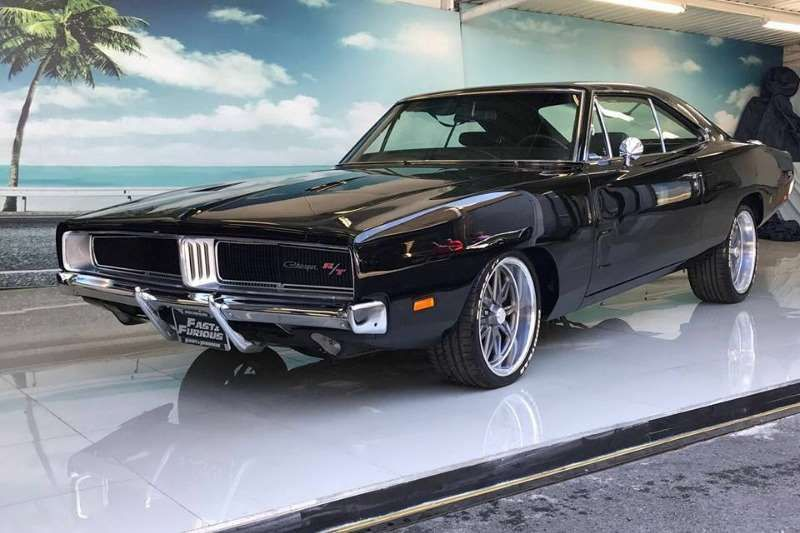

Inicios en 1969
Llegó al mercado en el otoño de 1969, como un modelo 1970. Si bien fue uno de los muscle cars en aparecer al final de la escena, su conocido perfil y poderoso motor lo colocaron al frente de la competencia. Se vendía con opción de techo duro o convertible y destacó por la gran variedad de motorizaciones con las que se encontraba.
1970
Debutó con un motor que variaba desde el "dócil" seis cilindros Slant Six en línea, al poderoso motor V8 de 440 plg³ (7,2 litros) con carburador de seis cuerpos (bocas), así como el imponente Hemi 426. Otros Pony Car solamente pudieron soñar con una gama de motores de este tipo. Estuvo basado en la plataforma del Plymouth Barracuda, pero con el agregado de dos pulgadas a la distancia entre ejes para darle más espacio interior. Fue presentado en ambas versiones: con techo y descapotable. Las versiones más potentes tenían la insignia R/T (Road and Track) y tanto el modelo base como del R/T, podían ser pedidos con el paquete de lujo SE, el cual incluía asientos de cuero y techo vinilo con la “tradicional” ventana trasera más pequeña. El R/T venía en modelos estándar con motor de 383 plg³ (6,3 litros) de 335 HP (340 CV; 250 kW).